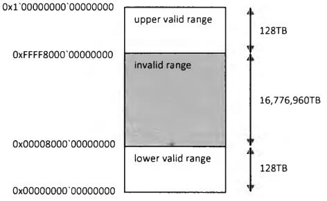
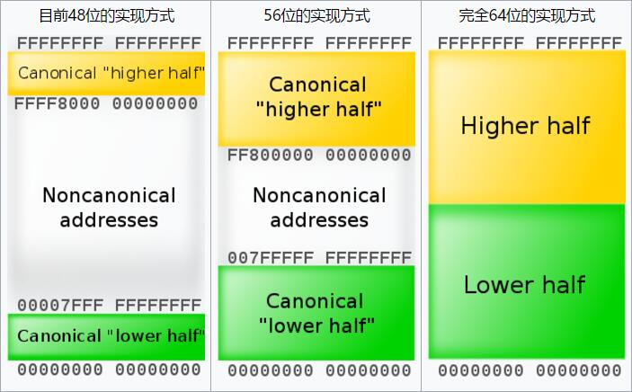
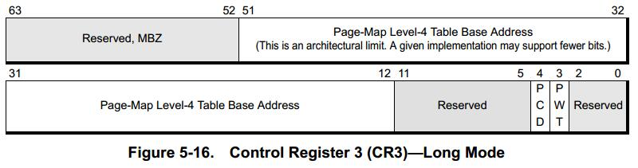
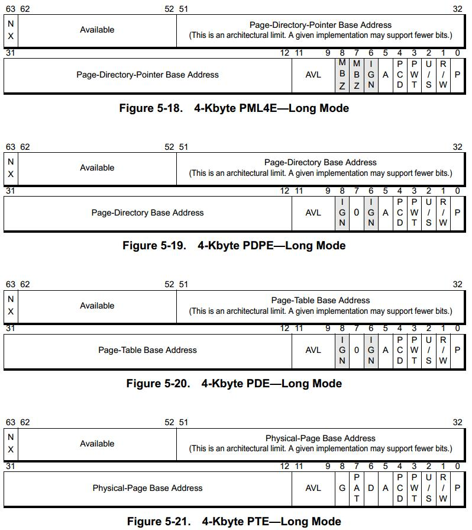
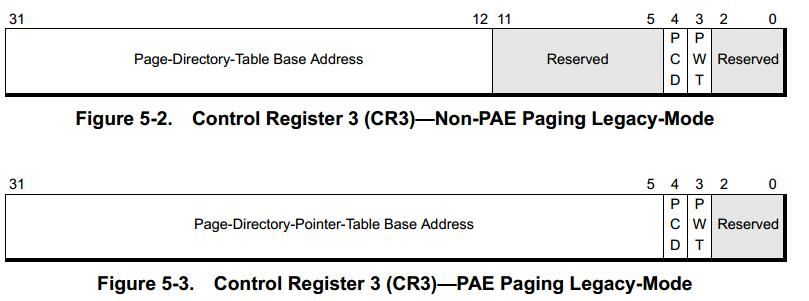
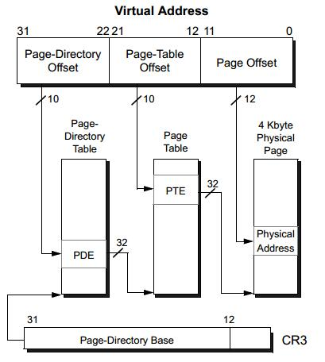
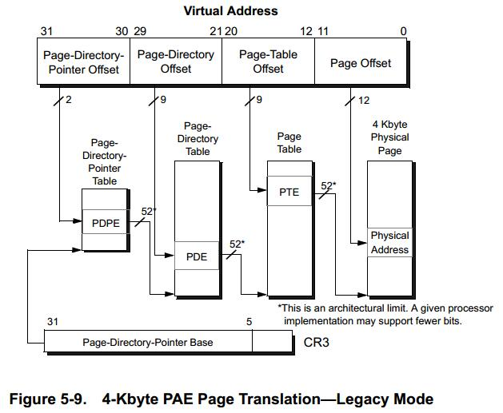
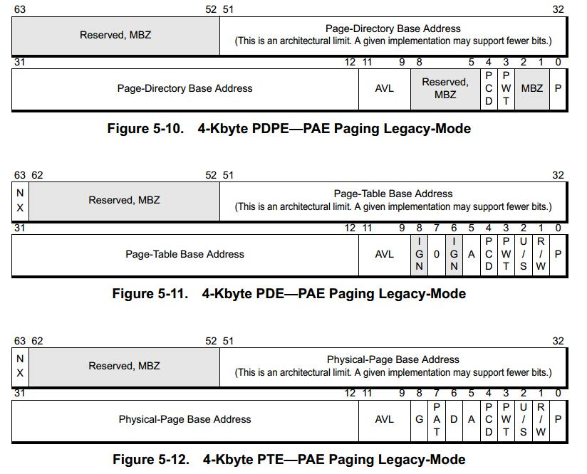
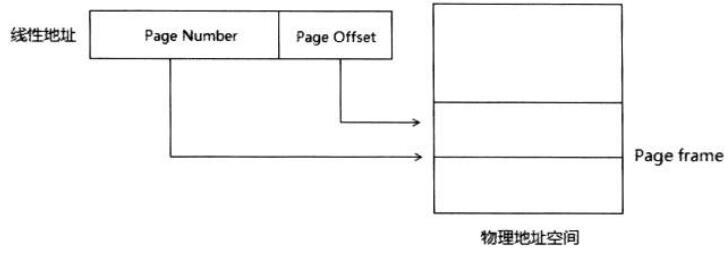

一个操作系统要称为现代意义上的操作系统就必须提供对内核的保护, 对不同用户程序之间的隔离, 并允许软件的载入位置浮动.
而满足这些基本要求的手段, 就是采用基于页面映射的 “虚拟内存” 机制, 或者说提供 “分页内存管理”.
在硬件上, 这是由 CPU 芯片的 “存储管理单元” MMU 支持的. 而在软件商, 则由操作系统内核中的内存管理模块实现.
采用分页内存管理时, 程序中所使用的内存地址, 即 CPU 中的运算单元 ALU 所发出的都是 “虚拟地址”, “虚拟地址” 是不能直接用来访问物理内存的, 需要 MMU 将其 “映射” 到某个物理页面上转换成 “物理地址” 才能访问.

这种映射是以页面为单位的,而不是以单个地址为单位的. 此外, MMU 还担负着检查访问权限的任务, 可以根据 CPU 的当前状态和访问形式决定是否允许访问.
为什么要有这样的映射呢?
- 每个进程的虚拟地址的范围是相同的, 但是实际映射的确是物理内存中不同的部位, 这样就实现了软件载入(物理)地址的浮动.
- 不同进程的虚拟地址被映射到物理内存中不同的页面集合, 每个进程都有自己的映射, 互相之间没有交集, 解决了进程间隔离的问题.
- 把 CPU 的运行状态分成 “用户态” 和 “内核态”, 其虚拟地址范围也分成两个部分, 一部分属于内核, 另一部分属于用户程序. 并使 CPU 运行于用户态时就没有访问内核部分的权限, 这就解决了保护内核的问题.
MMU 怎么知道哪一个虚拟页面应当被映射到哪一个物理页面呢? 为此就需要有个 “页面映射表”.
页面映射表实际上是个以虚拟内存页面号为下标的数组, 数组中的元素称为页面映射表项, 表项的内容决定了相应的虚拟内存页面是否有映射, 映射到哪一个物理页面, 以及该物理页面的保护模式 (权限要求和所允许的访问模式).
每个进程都有自己的页面映射表. CPU 在执行哪一个进程的程序, 就使用哪一个进程的页面映射表. CPU 有个专门的控制寄存器 CR3, 这个寄存器总是指向当前进程的页面映射表 (使用物理地址).
CPU 根据实际需要把当前用到的页面映射表项告诉混存在内部的 TLB (地址转换便查缓冲区) 中, 是 CPU 内部一块专用的, 特殊的 (只读) 高速缓存. 每当需要使用一个页面映射表项时, MMU 首先在 TLB 中寻找, 找到就不需要访问物理内存了, 找不到才从物理内存装入所需的表项.
在 CPU 的页面映射机制中, MMU 的作用是:
- 根据虚拟内存地址计算出该地址所属的页面;
- 再根据页面映射表的起始地址计算出该页面映射表项所在的物理地址;
- 根据物理地址在高速缓存的 TLB 中寻找该表象的内容;
- 如果该表项不在 TLB 中, 就从内存将其内容装载到 TLB 中;
- 检查该表项的 PA_PRESENT 标志位, 如果为1就表示映射的目标为某个物理页面, 因而可以访问这个页面, 但是需要进一步检查是否具有所要求的访问权限, 权限不足就会产生一次页面异常.
- 如果 PA_PRESENT 标志位为0, 则说明该虚拟内存页面的映像不在内存中, 当前指令因此失败, CPU 为此产生一次页面异常, 此时响应的异常处理程序采取响应措施:
- 如果整个页面映射表象为 0, 就说明该虚拟内存页面尚无映射, 对策是检查该虚拟内存页面是否落在已分配使用的区间, 如果是就为其分配物理页面并建立映射,然后重新执行失败的指令; 如果不是就属于越界访问, 应该引起更高层次的出错处理, 直至终止当前进程的运行.
- 如果整个页面映射表项非 0, 就说明虚拟内存页面的映像存在某个页面倒换文件之中, 对策是为其分配物理页面, 从页面倒换文件读入该页面的映像, 并将该页面映射表项修改为指向此物理页面, 然后重新执行失败的指令.
不过系统的分页内存管理实际上是段式内存管理机制基础之上的分页内存管理, 即二者结合.
机器指令中所用的地址其实是以 “段 + 偏移” 的形式给定 “逻辑地址”, 每个段都有一个 64 位的段描述符块, 里面说明的段的起点, 长度, 访问权限的要求等信息. 而段寄存器的内容则为 “段选择项”,
程序实际用于数据存储的内存区间可以分为三类:
- 全局数据所占用的空间, 这是在编译/链接的时候就静态的分配好的,并于整个可执行程序共存亡. 其分配和释放都是不可见的.
- 局部数据所占用的空间, 一般是在调用一个函数或分配局部变量的时候, 自动从栈上动态分配的, vu你在于这个函数的调用框架之中, 其寿命取决于 CPU 运行于这个函数中的时间. 这部分空间的分配和释放也是不可见的.
- 通过 malloc 一类的函数动态分配的堆缓冲区, 所占用的空间一直会存在到通过 free 一类的函数加以释放, 或者程序退出运行. 其空间的分配和释放是可见的, 运行中的程序完全掌握主动, 也承担责任.
分页
处理器对虚拟地址的限制
一个 64 位的 CPU 可以寻址 2^64 字节的内存, 这是一个巨大的地址空间, 远超系统所需要的.
由于虚拟地址必须被翻译, 因此内存管理单元必须处理每个地址位, 因此其复杂性随地址大小而增加.
因此, 当前的 x64 处理器实际上将可用位数限制为 48 位, 但是有个巧妙的方案.
简单的不允许使用位 48-63 将导致虚拟内存地址限制在 256TB 以下, 这将使操作系统设计复杂化.
例如在 32 位 Windows 中, 完整的 32 位虚拟地址可用, 系统代码和数据放置在虚拟地址空间的上半部分, 即高于 2GB, 从而在应用程序和系统代码之间有了清晰的分界. 如果地址限制在 256TB, 远远低于 8EB 一半的大小, 那么在 x64 中是不可能的.
所以高 16 位被用作符号扩展 (任何虚拟地址的48位至63位必须与47位一致)
这意味着我们有两个有效的地址范围:
0 - 0x7FFF'FFFFFFFF47~63 位都是00xFFFF8000'00000000 - FFFFFFFF'FFFFFFFF47~63 位都是 1


x64 代码中使用的所有地址必须是规范形式的, 即从 63 位到实现位都是 0 或 1. 尝试使用非规范地址会导致页面错误异常.
页面翻译概述
处理器使用内存中的一组表来确定与虚拟内存对应的物理地址.

在长模式下, 可提供 4KB, 2MB 和 1GB 字节物理页大小.
在传统模式下, 可提供 4KB, 2MB 和 4MB 的大小.
!!! 在这篇文章我只介绍长模式和传统模式的 4KB 页面分页模式.
页面翻译选项
有四个控制寄存器位来控制页面翻译选项:
CR0.PGCR0[bit31], 页面翻译启用CR4.PAECR4[bit5], 物理地址扩展, 置1可将虚拟地址转换为长达52位的物理地址. 激活长时间模式前必须启用PAECR4.PSECR4[bit4], 页面大小扩展, 置1可以是操作系统在页面翻译过程中使用 4MB 物理页面. 页面大小的选择是在PDE的基础上进行的.
物理页面的大小的选择取决于CR4.PSE和CR4.PAE的值,具体如图. (处于长模式时, CR4.PSE 的值将被忽略, 因为 PAE 必须被启用)EFER.LMA长模式激活PDE.PSPDE[bit7], 置1时, 使用大的物理页面(大小由 PAE 和 PSE 决定), 并且 PDE 成为翻译层次结构的最低级别.PDPE.PSPDPE[bit7], 置1时, 使用 1GB 的物理页面, 并且 PDPE 成为翻译层次结构的最低级别.
不是所有模式都可以使用这些选项, 表总结了每种模式下可用的分页支持选项

访问无效地址
引用无效地址都会产生页面错误异常, 中断帧被推送到堆栈上, 保存的rip指向尝试内存引用的指令. 这个特殊的异常还会使用附加信息推送错误代码, 例如: 读取, 写入或指令提取.
此外, CR2 寄存器设置为代码尝试访问的地址.
长模式页面翻译
长模式页面翻译需要使用页面地址扩展 (CR4.PAE). 在启用 PAE 之前激活长模式会导致通用保护异常 (#GP) 发生.
64位寻址模式 (长模式), 是物理地址扩展 (PAE) 的超集; 因此不同于 x86 体系结构, 每级页表寻址长度变成 9 位, 由于在 x64 体系结构中, 普通页大小仍为 4KB, 然而数据却表示 64 位长, 因此一个 4KB 页在 x64 体系结构下只能包含 512 项内容, 所以为了保证页对齐和以页为单位的页表内容换入换出, 在 x64 下每级页表寻址部分的长度定为 9 位.
为了正确翻译 x64 的线性地址, 其页表也从 x86 的 2 级变成了 4 级, 翻译过程如图所示, 在 x64 体系结构中, 每级页表包含 512 项 (2^9) 下级目录的指针, 该指针称为页表项, 描述了存储下级.
CR3 寄存器
在长模式下, CR3寄存器用于指向PML4基地址. CR3在长模式下扩展为64位, 允许PML4表位于52位物理地址空间的任何位置.

Table Base Address Field: 位 51~12, 这个字段指向 PML4 基地址, PML4 表在 4KB 的边界上对齐, 低 12 位地址位假定为0, 总共为 52 位的基地址大小. 在支持小于 52 位物理地址空间的CPU上, 必须将未实现的高地址位清零.
PWT (Page-Level Writethrough): 页面转换表是否具有回写或Writethrough缓存策略. 为 0 时具有回写缓存策略, 为 1 时具有 Writethrough 缓存策略
PCD (Page-Level Cache Disable): 最高级别页面转换表是否可缓存. 为 0 时可缓存, 为 1 时不可缓存.
4KB 页面翻译


Present (P) Bit: 指示页面翻译表或物理页是否加载在物理内存中, 如果为 0 时访问表或页面将引发页面异常 (#PF). 此位为 0 时, 其他控制位无效. 且不会被缓存到 TLB 中.
Read/Write (R/W) Bit: 控制读写访问, 为 0 时只读, 为 1 时读写.
User/Supervisor (U/S) Bit: 用户权限控制, 为 0 时限制访问特权级别为内核态(CPL 0, 1, 2). 为 1 时, 可被用户态和内核态访问 (CPL 0, 1, 2, 3).
Page-Level Writethrough (PWT) Bit: 同 CR3.PWT 解释
Page-Level Cache Disable (PCD) Bit: 同 CR3.PCD 解释
Accessed (A) Bit: 指示是否访问了页面转换表或物理页, 此位在第一次读取或写入时置1, CPU 不会清除此位
Dirty (D) Bit: 该位仅存在于页面翻译层次结构的最低级别中. 它指示此地址的物理页面是否写入. 此位在第一次写入物理页面时置1, CPU 不会清除此位
Page Size (PS) Bit: 此位存在于 PDE 和 长模式的 PDPE 中. 当 此位设置在 PDPE/PDE 中, 那么这个 Entry 是页面翻译层次结构的最低级别.
当 PS 位在 PTE 以上的所有级别清除为0时, 页面转换层次结构的最低级别是 PTE, 物理页面大小为 4KB.Global Page (G) Bit: 此位仅存在于页面翻译层次结构的最低级别. 指示物理页面是一个全局页面.
当 CR3 由MOV VRn指令显式加载或在任务切换期间隐含加载时, 全局页面 (G=1) 的 TLB 不会失效.
使用G位需要将 CR4.PGE=1Available to Software (AVL) Bit: CPU 不解释不适用, 供系统使用
Page-Attribute Table (PAT) Bit: 页属性表支持位. 该位仅在页面翻译层次结构的最低级别中.
- 如果最低级别是 PTE (PDE.PS=0), 则 PAT 在 bit7
- 如果最低级别是 PDE (PDE.PS=1) 或 PDPE (PDPE.PS=1), 则 PAT 在 bit12
此位涉及更复杂的分页系统, 和页高速缓存有关, 可以不予理会, 在普通的4KB分页机制中, 处理器建议将其置0.
No Execute (NX) Bit: 指示此物理页面的内容不可执行. 此位仅存在于 PAE 定义的转换表项中, 传统模式 PDPE 不包含此位.
只有在通过将 EFER.NXE 设置为1, 启用了无执行页面保护功能时, 才能设置NX位. 否则 NX 被视为保留位, 必须为0.
根据图我们可以得到页面翻译过程为:
- PML4E(PDP) = CR3(PML4) + PML4_Index * 8
- PDPE(PD) = PDP + PDP_Index * 8
- PDE(PT) = PD + PD_Index * 8
- PTE(PhysicalAddressBase) = PT + PT_Index * 8
- PhysicalAddress = PhysicalAddressBase + PhysicalOffset.
传统模式页面翻译
传统模式支持两种形式
- Normal Paging (Non-PAE) - 当物理地址扩展被禁用时使用 (CR4.PAE = 0) . 页面转换表中的 Entry 是32位, 用于将32位虚拟地址转换为大到40位的物理地址.
- PAE Paging - 当物理地址扩展被启用时使用 (CR4.PAE = 1). 页面转换表中的 Entry 是64位, 用于将32位虚拟地址转换为高达52位的物理地址.
根据所使用的分页形式和物理页大小, 传统分页最多使用三层页面转换表. 使用虚拟地址位字段选择每个表内的 Entry.
传统模式页面翻译表:
- PT (Page Table, 页表) - 每个页表项 (PTE) 指向物理页. 如果使用 4KB 页面, 页表是页面翻译层次结构的最低级别. 翻译 2MB 或 4MB 的页面时, 不会使用PTE.
- PD (Page Directory, 页面目录) - 如果使用 4KB 页面, 则每个 PDE 指向页表. 如果使用 2MB 或 4MB 的页面, 则 PDE 是页面翻译层次结构的最低级别, 并指向物理页面.
在 Non-PAE 形式中, 页面目录是翻译层次结构的最高级别. - PDP (Page Directory Pointer, 页面目录指针) - 每个 PDPE 指向页面目录. 页目录指针仅用于 PAE 分页 (CR4.PAE = 1), 是传统页面翻译层次结构中的最高级别.
CR3 寄存器
CR3寄存器用于指向最高级页面转换表的基址, 基址是页面目录指针表或者页面目录表.

CR3 各控制位解释参考长模式.
Non-PAE 4KB 页面翻译

PxE 各控制位解释参考长模式.
PAE 4KB 页面翻译
PAE 自动使用页大小位, 所以 PAE形式忽略 CR4.PSE 的值.


TLB 和 Paging-Structure Cache 简单概述
为了将虚拟地址转换为物理地址, 处理器必须执行 4 个存储器访问, 一个用于层次结构中的每个PS. 由于内存延迟比指令执行时间长得多, 因此这显着减慢了处理器的浪费.
为了避免这种情况, 使用两种类型的缓存：TLB 和 Paging-Structure Cache.
TLB (Translation Lookaside Buffers) 就是 Cache 的一类. TLB 缓存从虚拟地址到物理地址的完整翻译, 以及所有控制信息, 即页面是读/写还是只读, 是否可以在 Ring3 访问等. 如果虚拟的翻译地址在 TLB 中找到, 不需要访问内存中的分页结构.
Paging-Structure Cache, 它缓存页表的各级 Table-Entry. 它是与 TLB 互补的.
举个例子, 动动手~
好, 我们已经了解了上面的基础知识, 那么我们来动手实践一下来将虚拟地址转换成物理地址
|
|
动手翻译长模式虚拟地址
操作系统: Windows 8.1 x64
我们用这两行代码来输出这个字符串的虚拟地址为 0x0076FA1C, 然后我们去找到对应的物理地址.
|
|
动手翻译传统模式虚拟地址
操作系统: Windows 8.1 x86
字符串的虚拟地址为 0x00C2FA60
|
|
嘿~是不是很神奇?
在 Windows 系统中与内存管理相关的基础概念
页的几个术语
Virtual Page Offset, VPO (虚拟页偏移) 也就是前面说的分页模式中虚拟地址在物理 Page Frame 内的 Offset 值.Virtual Page Number, VPN (虚拟页号) 与 VPO 相对应, 用来查找最终的物理地址 Page Frame 地址. 在其中忽略的各种 Table Entry 的 Index 的值.Page Frame, PF (页帧) 是在物理地址空间里, 一个页的起始地址 (基地址), 分为 4 种: 4K Page Frame, 2M Page Frame, 4M Page Frame, 1G Page Frame.Page Frame Number, PFN (页帧号) 是以 PF, 即以页为单位对内存进行编号, 该编号可作为页数组的索引. 计算方法为 PF / PageSize
他们的关系如图:

Windows 虚拟地址空间

IRQL
在 << Windows kernel learning: 1. Basis >> 中我们了解到有几种 IRQL. 其中定义了两个软件中断: APC 和 DPC.
他们具有相关的 IRQL 级别: APC 中断为 1, DPC 为 2. 当检查软件中断的代码发现有一个正在等待处理时, 且当前 IRQL 小于中断 IRQL 则调用处理程序, 从而模拟处理器对硬件中断的处理.
当处理器的 IRQL 大于等于 2 时, 该处理器被阻止执行上下文切换的线程调度代码.
处理器在 IRQL 为 1 时可以切换线程上下文, 并且当线程恢复时, IRQL 将恢复为线程被抢占时的值.
用户模式代码始终在 IRQL=PASSIVE 执行, 并且没有可用的 API 来更改当前的 IRQL. 所以, 用户模式代码总是可以中断, 并且线程上下文切换总是可能的.
处理程序代码绝不能降低 IRQL, 除非它在最后阶段即将要从中断返回. 当这种情况发生时, 处理程序必须恢复在中断发生前生效的 IRQL. 特别是, 它不能将 IRQL 设置为低于中断前的值.
一个代码块可以将IRQL显式提升到当前级别以上, 以禁止较高的IRQL中断. 这可以在处理程序和不是处理程序的任何一部分的代码中完成.
所有硬件中断都具有大于 DPC 的IRQL, 因此软件中断总是在硬件中断处理程序中被屏蔽 (但是只有在执行处理程序的处理器上才会被屏蔽, 其他处理器可能处于任何IRQL).
内核检查软件中断的一个阶段是在退出处理程序之前还原IRQL. 例如, 可能会发生以下事件序列:
- PASSIVE执行的代码被硬件中断中断.
- 处理程序代码请求软件 DPC 中断. 当前的 IRQL 大于 DPC, 因为它已经在处理程序逻辑开始处被提升为硬件中断的 IRQL, 所以 DPC 中断保持不变.
- 处理程序代码返回, 将 IRQL 还原为 PASSIVE.
- 降低 IRQL 的代码检查待处理的软件中断, 并找到DPC. 由于 IRQL 被设置为 PASSIVE, 所以可以对其中断. IRQL 设置为DPC, 并调用 DPC 中断的处理程序.
- 当处理程序返回时, IRQL 将再次恢复为 PASSIVE. 这一次没有进一步的中断等待, 并且被中断的代码被恢复.
APC 中断
APC (异步过程调用) 提供了一种在特定用户线程环境中执行用户程序和系统代码的途径.
APC 例程可以访问资源(对象), 等待对象句柄, 引发页面错误, 以及调用系统服务.
DPC 队列是系统范围的, 而 APC 队列是存在于每个线程中的.
有两种 APC 类型: 内核模式和用户模式.
内核模式的 APC 并不要求目标线程获得许可(Alertable State), 而用户模式的线程必须获得许可才可以执行.
内核模式的 APC 也有两种类型: 普通的和特殊的.
特殊的 APC 在 APC 级别上执行, 并且允许 APC 例程修改某些 APC 参数; 普通的 APC 在 PASSIVE 级别上执行, 并且执行被特殊APC 修改过的参数.
APC 插入和交付的图表
| APC 类型 | 插入行为 | 交付行为 |
|---|---|---|
| 特殊的 (内核模式) | 插入在内核模式 APC 列表的尾部 | 只要 IRQL 降下来并且线程未在守护区域内, 就在 APC 级别上被交付. 相应的指针指向在插入 APC 时指定的参数 |
| 普通的 (内核模式) | 插入在最后一个特殊 APC 的正后面 (也就是所有其他普通 APC 的头部) | 在关联的特殊 APC 被执行后, 在 PASSIVE 级别上被交付, 此特殊 APC 返回的参数也被传递过来 |
| 普通的 (用户模式) | 插入在用户模式 APC 列表的尾部 | 只要 IRQL 降下来, 并且线程未在临界区或守护区域内, 而且该线程处于 Alertable 的状态, 就在 PASSIVE 级别上被交付. 所关联的特殊 APC 返回的参数也被传递过来 |
| 普通的 (用户模式) 线程退出 (PsExitSpecialApc) | 插入在用户模式 APC 列表的头部 | 如果线程正在执行可被 Alertable 的用户模式等待, 则当返回用户模式时, 在 PASSIVE 级别上被交付, 线程终止特殊 APC 所返回的参数也被传递过来 |
内核使用 APC 来询问线程环境, 以及终止目标线程.
设备驱动程序在拥有一把锁后, 常常会阻塞 APC, 或者进入一个临界区或守护区域, 以防止这种操作发生; 不然,该锁有可能永远不会被释放, 从而导致系统停住.
DPC 中断
DPC (延迟过程调用) 中断也用于请求异步执行回调, 但与 APC 中断不同, 因为:
- 它是一个 “真正的” 中断, 一旦 IRQL 允许, 它可以在任意的线程上下文中执行.
- 它具有更高的 IRQL, 因此它在 APC 中断之前处理.
内核利用 DPC 来处理定时器到期 (并解除那些正在等待定时器的线程), 以及在一个线程的时限到期以后重新调度处理器.
设备驱动程序利用 DPC 来处理中断, 为了给硬件中断提供及时服务, Windows 在设备驱动程序的配合下, 试图将 IRQL 曝出在设备 IRQL 级别之下. 达到这个目的的方法是, 让设备驱动程序 ISR (中断服务例程) 执行最少最必要的工作来响应它们的设备, 将易变的中断状态保存起来, 并将数据传输或者其他并非时间紧迫的中断处理活动延迟到一个位于 DPC 级别的 DPC 中执行.
正在等待执行的 DPC 例程被存储在由内核管理的队列中, 每个处理器都有一个这样的队列 (DPC 队列).
DPC 中断产生规则图表
| DPC 优先级 | DPC 被定为在 ISR 的处理器上 | DPC 被定为在另一个处理器上 |
|---|---|---|
| 低级 | DPC 队列长度超过了最大 DPC 队列长度值, 或者 DPC 请求率小于最小 DPC 请求率 | DPC 队列长度超过了最大 DPC 队列长度值, 或者系统空闲 |
| 中级 | 总是激发 | DPC 队列长度超过了最大 DPC 队列长度值, 或者系统空闲 |
| 中-高级 | 总是激发 | 目标处理器空闲 |
| 高级 | 总是激发 | 目标处理器空闲 |
DPC 例程可以调用内核函数, 但是不能调用系统服务, 产生页面错误, 或者创建或等待分发器对象.
编写 DPC 例程规则: 不能访问换页的内存, 不能执行分发等待操作, 也不能对它们将来运行在哪个 IRQL 上做假设.
而且, 绝对不能使用 KeAcquire/ReleaseSpinLockAtDpcLevel API, 因为这些 API 函数假设运行在 DPC 级别上.
VMM (Virtual Memory Manager) 数据结构
VAD (Virtual Address Descriptor)
VAD 用于在用户模式范围内跟踪保留和提交的地址 (内核空间并不受 VAD 的管理).
VAD 会存储保留或提交的每个地址范围, 以及保护状态和访问权限.
VAD 以 AVL 自平衡树的结构组织, 其中每个节点是 VAD 实例, 最多可以有两个子节点.
左边的 Children 如果存在, 是一个地址范围小于 parent 节点地址范围的 VAD; 右边的 Children 大于 parent 节点地址范围.
VAD 是此树的根, 每一个 nt!_RTL_BALANCED_NODE 中便是一段虚拟内存描述信息.
比如说 0x1000 这一段内存是保留的, 0x2000这一段内存是提交的, 那我们怎么知道它是保留还是提交就体现在这个 nt!_RTL_BALANCED_NODE 上, 也就是每一块虚拟内存 (我说的是一块, 不是一页) 都会一一对应着一个节点 (这个问题很关键, 很关键)
通过调试的数据结构可以看到, nt!_MMVAD 的首字段是 nt!_MMVAD_SHORT, 而 nt!_MMVAD_SHORT 首字段是 nt!_RTL_BALANCED_NODE. 所以, 每个节点实际上就是 nt!_MMVAD 结构
让我们看下相关的数据结构
|
|
可以在 Windbg 使用 !vad 命令来显示 VAD 所有内容:
|
|
实际上, VadRoot 的地址存在于 _EPROCESS->VadRoot->Root 中的
!vad 输出各项含义:
- VAD, _MMVAD 数据结构的地址
- Level, 树的深度
- Start/End, 表示为虚拟页号(VPN, Virtual Page Number), 即地址除以页面大小 (4KB) 的值.
例如第一行定义从0xde0000开始, 以0xdeffff结束, 注意结束地址是最后一页的 VPN, 所以最后一个字节的地址是0x1F000 + 0xFFF - Commit, 范围内已提交的页面数, 我们可以选择保留一个范围, 然后只提交其中一部分.
- 分配类型.
- 页面上允许的访问类型.
当 PML4E 当前位清零时, 对应的 VA 范围不存在 PDPT, PD 或 PT. 没有存储该范围的 PDPT 的物理页面, 没有存储 PD 的页面等.
同样, PML4E 可以指向现有的 PDPT, 但是 PDPTE 可以使当前位清零, 因此对于该特定范围不存在 PD 或 PT.
对于 _MMVAD_SHORT.u.VadFlags.MemCommit = 1, VMM必须在PTE内部记录其已被分解的信息, 因为VAD标志将范围标记为完全提交. 对于这样的范围, 将VAD标志设置为1, 并且按照说明设置分解的PTE.
对于 _MMVAD_SHORT.u.VadFlags.MemCommit = 0 的范围, VMM可以设想将PTE设置为0: 范围不会在VAD中标记为已提交, 因此PTE设置为0表示未提交的页面. 然而, 实际发生的情况是, PTE设置为 0x00000000'00000200.